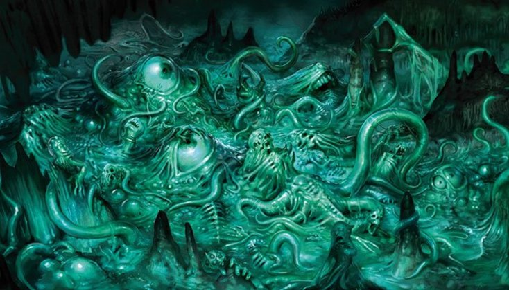

Из недр горы Вурмисадрет, что высится среди Эйглофианских гор в Гиперборее, происходит множество мерзких уродливых тварей, и все они рождаются в одном отвратительном месте - Источнике Нечисти по имени Абот.
Находясь в скользкой от грязи пещере, окружённый глиняными берегами, он заполняет своей жуткой серой массой целое подземное озеро. И в этом озере идёт непрерывный процесс гадостного размножения.
Ежесекундно из Абота выбираются всякого рода дрянные создания - то склизкие, то покрытые шерстью, то чашуйчатые, то и какие вовсе невозможно вообразить! И все они непременно имеют самый неприглядный вид, что только могут иметь живые существа. А те, что оказываются недостаточно проворными и способными, тут же погибают, пожираемые многочисленными ртами, зияющими в жуткой туше их родителя.
Будучи древним божеством и обладая можным, но ивращённым и циничным сознанием, Абот общается посредством телепатии. А отсутствие зрения возмещает тем, что выпрастывает непрерывно меняющиеся щупальца, которые исследуют всякого, кому хватает смелости к нему подобраться. И если на ощупь он определяет несчастного посетителя пригодным для своего пищеварения, то неизбежно затягивает в свою движущуюся массу.
Придуман Кларком Смитом для рассказа "Семь испытаний" (The Seven Geases, 1934) из его Гипероборейского цикла.
